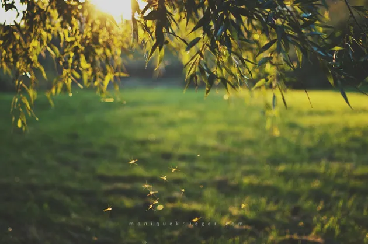

MTVM - Chương 12

Chương 12
Khi thức dậy vào buổi sáng tôi bước tới cửa sổ và nhìn ra ngoài. Trời trong xanh và không một gợn mây nơi rặng núi. Bên ngoài kia dưới khung cửa sổ là mấy chiếc xe bò và một cái xe ngựa chở khách cũ, phần gỗ trên nóc đã vỡ và rơi xuống dưới sự tác động của thời tiết. Chúng hẳn bị bỏ lại từ thời trước khi xuất hiện ô tô chở khách. Một con dê nhảy lên một chiếc xe bò rồi nhảy lên nóc của chiếc xe ngựa. Nó thúc đầu vào một con dê khác đứng bên dưới và nhảy xuống đất khi thấy tôi vẫy tay gọi.
Bill vẫn còn ngủ, nên tôi mặc quần áo, xỏ chân vào đôi giày để bên ngoài hành lang, rồi đi xuống dưới nhà. Dưới nhà không một bóng người, tôi mở cửa và bước ra ngoài. Sáng sớm mát dịu và mặt trời vẫn chưa hong khô hết những hạt sương còn đọng lại khi gió lắng xuống. Tôi lùng sục quanh nhà kho phía sau nhà nghỉ và kiếm được một cái quốc chim, và đi xuống dưới suối để đào giun làm mồi. Con suối rất trong và nông nhưng dường như không có nhiều cá hồi. Ở bên bờ mọc đầy cỏ ẩm ướt tôi bổ quốc chim xuống đất và moi ra một tảng đất mặt. Bên dưới có giun. Chúng lẩn thật nhanh khi tôi nhấc cỏ lên và tôi đào cẩn thận và bắt được kha khá. Đào phần rìa mặt đất ẩm tôi thu được hai bao thuốc lá đầy giun rồi rắc đất lên chúng. Lũ dê chăm chú quan sát tôi làm việc.
Khi tôi quay trở lại nhà nghỉ thì bà chủ đã xuống bếp, và tôi bảo bà ta mang cà phê ra cho chúng tôi, và rằng chúng tôi muốn bà chuẩn bị sẵn cả bữa trưa nữa. Bill đã thức dậy và đang ngồi bên mép giường.
“Tôi nhìn thấy cậu từ cửa sổ,” anh nói. “Không muốn làm cậu phân tâm. Cậu làm gì thế? Chôn tiền chăng?”
“Cậu là đồ lười!”
“Cậu làm việc vì miếng cơm manh áo à? Quá là xuất sắc. Tôi mong cậu sáng nào cũng phát huy như thế nhé.”
“Nào,” tôi nói. “Dậy đi.”
“Cái gì? Dậy á? Tôi không bao giờ dậy cả.”
Anh nằm ườn ra và kéo chăn lên tận cằm.
“Cậu cố mà gọi tôi dậy xem nào.”
Tôi kiểm tra lại các trang thiết bị và cho tất cả vào túi đựng đồ.
“Cậu không gọi tôi dậy à?” Bill hỏi.
“Tôi xuống nhà ăn sáng đây.”
“Ăn á? Làm sao mà cậu không nói thế ngay từ đầu cơ chứ? Tôi cứ nghĩ là cậu chỉ muốn tôi ngồi dậy cho vui thôi chứ. Ăn à? Được. Giờ thì cậu có lý rồi đấy. Cậu đi ra ngoài và đào thêm giun đi rồi tôi sẽ xuống ngay.”
“Ôi giời, cậu biến đi!”
“Lao động vì lợi ích của tất cả mọi người.” Bill xỏ chân vào quần. “Cho thấy sự mỉa mai và thương hại.”
Tôi bắt đầu đi ra khỏi phòng cùng với túi đựng dây, lưới, và túi cần câu.
“Này! Quay lại đây!”
Tôi ló đầu vào cửa.
“Chẳng lẽ cậu không biết tỏ ra một chút mỉa mai và thương hại à?”
Tôi đưa ngón tay cái quệt mũi.
“Thế đâu phải là mỉa mai.”
Khi bước xuống dưới lầu tôi vẫn còn nghe thấy Bill hát, “Mỉa mai và Thương hại. Khi bạn cảm thấy… Ôi, Hãy cho chúng một ít Mỉa mai và Cho chúng Thương hại. Ôi, hãy Mỉa mai. Khi chúng cảm thấy… Chỉ một chút mỉa mai. Chỉ một chút thương hại…” Anh cứ hát thế mãi cho tới khi xuống dưới nhà. Tôi nhận ra giai điệu “The Bells are Ringing for Me and my Gal[1].” Tờ nhật báo Tây Ban Nha tôi cầm trong tay đã một tuần tuổi.
“Tất cả mấy cái mỉa mai và thương hại là sao thế cậu?”
“Cái gì cơ? Không hiểu Mỉa mai và Thương hại nghĩa là gì à?”
“Không. Ai tạo ra nó thế?”
“Tất cả mọi người. Người ta đang phát điên lên vì nó ở New York đấy Giống như là chuyện về Fratellinis[2] ấy mà.”
Cô gái đi vào với cà phê và bánh mì nướng bơ trong tay. Hay, đúng hơn, là bánh mì nướng rồi phết bơ lên trên.
“Cậu hỏi xem cô ấy có mứt không,” Bill nói. “Cậu phải thật châm biếm với cô ấy đấy nhé.”
“Cô có mứt không?”
“Như vậy là chưa đủ châm biếm đâu. Ôi giá mà tôi nói được tiếng Tây Ban Nha.”
Cà phê rất ngon và chúng tôi uống hết cả một bình lớn. Cô gái mang ra mứt dâu được bày trên một cái đĩa thủy tinh.
“Cảm ơn.”
“Này! Nói thế là không đúng đâu,” Bill kêu lên. “Cậu phải nói thứ gì châm biếm ấy. Cậu thử một câu đùa về Primo de Rivera[3] xem nào.”
“Tôi có thể hỏi cô ấy về loại mứt mà họ cho rằng họ đã mang vào Riff[4].”
“Thật nghèo nàn,” Bill nói. “Quá sức nghèo nàn. Cậu làm thế không được. Thế đấy. Tức là cậu chẳng hiểu gì về châm biếm cả. Cậu không có lòng thương hại gì cả. Cậu nó ra cái gì đó bằng lòng thương hại xem nào.”
“Robert Cohn.”
“Cũng không tệ. Có tiến bộ đấy. Cơ mà sao Cohn lại đáng thương? Châm biếm thử xem.”
Anh hớp một ngụm lớn cà phê.
“A, quỷ ạ!” tôi nói. “Vẫn còn quá sớm vào buổi sáng.”
“Được rồi đấy. Và cậu than rằng cậu cũng muốn trở thành một nhà văn nữa. Cậu chỉ là một anh viết báo thôi. Một anh viết báo biệt xứ. Cậu phải châm biếm ngay từ cái giây phút mà cậu bước chân xuống giường ấy. Cậu phải thức giấc với cái mồm đầy rẫy lòng thương hại cơ.”
“Tiếp đi,” tôi nói. “Cậu kiếm mấy thứ đấy ở đâu thế?”
“Mọi người. Chả lẽ cậu không đọc bao giờ? Chả lẽ cậu không gặp mặt ai bao giờ? Cậu biết cậu là gì không? Cậu là một kẻ biệt xứ. Sao cậu không sống ở New York cơ chứ? Như thế cậu mới hiểu mấy chuyện này. Cậu muốn tôi làm gì nào? Năm nào cũng phải tới đây mà kể cậu nghe chắc?”
“Cậu uống cà phê nữa đi,” tôi nói.
“Tốt. Cà phê tốt cho cậu. Trong đấy có chứa caffeine đấy. Caffeine, chúng tôi tới đây[5]. Caffeine đưa một người đàn ông lên ngựa của cô ta và đưa một người đàn bà vào nấm mồ của anh ta[6]. Cậu có biết cậu gặp vấn đề gì không? Cậu là một gã biệt xứ. Một trong những loại tệ hại nhất. Cậu chưa nghe thấy thế bao giờ à? Không ai có thể viết được thứ gì đáng giá khi rời xa tổ quốc đâu cậu ạ. Ngay cả khi viết báo cũng vậy.”
Anh tiếp tục uống cà phê.
“Cậu là một kẻ xa quê. Cậu không có được mối liên hệ với đất mẹ. Rồi cậu trở nên giả tạo. Những tiêu chuẩn châu Âu giả tạo đã hủy hoại cậu. Cậu cứ nốc rượu đến chết. Và cậu trở nên ám ảnh với tình dục. Cậu dành hết thời gian để ngồi lê đôi mách, mà không làm gì cả. Cậu là kẻ tha hương, thấy không? Cậu cứ la cà ở mấy cái quán café suốt.”
“Nó nghe ra cũng là một đời tươi đẹp,” tôi nói. “Thế tôi làm việc vào lúc nào?”
“Cậu không làm việc. Một nhóm mấy bà sẽ tuyên bố bao dưỡng cậu. Một nhóm khác thì than rằng cậu bị liệt dương.”
“Không,” tôi nói. “Tôi chỉ bị một tai nạn nhỏ thôi mà.”
“Ý tôi không phải vậy,” Bill nói. “Những chuyện như vậy không thể nói ra được. Đó là những thứ mà cậu phải đưa vào vòng bí mật. Như là chiếc xe đạp của Henry[7] vậy.”
Anh trở nên phấn khích, nhưng anh ngừng lại. Tôi lo là anh nghĩ rằng anh đang làm tổn thương tôi với câu bông đùa về chứng bất lực. Tôi muốn anh nói tiếp.
“Không phải là xe đạp,” tôi nói. “Lúc ấy ông ta đang cưỡi trên lưng ngựa.”
“Tôi nghe nói đó là cái xe đạp ba bánh.”
“Ồ,” tôi nói. “Một cái máy bay thì trông cũng gần giống cái xe đạp ba bánh mà. Cái cần điều khiển cũng hoạt động theo kiểu đó.”
“Nhưng cậu đâu có đạp máy bay.”
“Không,” tôi nói, “tôi nghĩ là cậu không đạp máy bay.”
“Mình phải dừng cái chủ đề này lại thôi,” Bill nói.
“Tôi thấy ông ấy cũng là một nhà văn hay,” Bill nói. “Còn cậu thì là một gã tốt bụng. Có ai nói cho cậu biết rằng cậu sở hữu một tấm lòng nhân hậu chưa?”
“Tôi không tốt đâu.”
“Nghe này. Cậu là một kẻ lương thiện, và tôi thích cậu hơn bất kỳ ai trên đời này. Ở New York thì tôi chẳng thể nói thế với cậu. Vì nói thế nghĩa là tôi là thằng đồng tính. Đó là toàn bộ ý nghĩa của cuộc Nội chiến. Abraham Lincoln[8] cũng là một thằng cha đồng tính cơ mà. Ông ta mê đắm Tướng Grant[9]. Cả Jefferson Davis[10] nữa chứ. Còn Lincoln thì chỉ trả tự do cho nô lệ qua một cuộc đánh cược. Trường hợp của Dred Scott[11] đã được đóng đinh bởi Anti-Saloon League[12]. Tình dục giải thích tất cả những điều ấy. Vợ ông đại tá và Judy O’Grady[13] là đồng tính nữ về mặt bản chất.
Anh ngừng lại.
“Muốn nghe tiếp không?”
“Cậu cứ nói đi,” tôi trả lời.
“Tôi chỉ biết có từng ấy thôi. Đến bữa trưa tôi sẽ kể tiếp.”
“Đúng là Bill già,” tôi nói.
“Còn cậu là đồ vô công rồi nghề!”
Chúng tôi gói bữa trưa và hai chai rượu vào một cái ba lô, và Bill phụ trách nó. Tôi vác túi cần câu và lưới trên lưng. Chúng tôi lên đường và vượt qua một cánh đồng và tìm thấy một con đường đi qua cánh đồng và đi vào rừng ở dưới dốc của ngọn đồi đầu tiên. Chúng tôi vượt qua cánh đồng trên con đường đầy cát. Cánh đồng dâng lên cuồn cuộn và đầy cỏ và cỏ trụi lủi dưới sự cần mẫn của lũ cừu. Đám gia súc ở trên đồi. Chúng tôi nghe thấy tiếng chuông cổ của chúng vang lên từ trong rừng.
Con đường vắt ngang một dòng suối trên khúc gỗ tròn. Mặt của khúc gỗ hướng xuống, và có một cái cây non được uốn cong dọc theo chiều khúc gỗ để làm tay vịn. Trong cái ao nhỏ bên dòng suối con nòng nọc búng mình khỏi bờ cát. Chúng tôi đi lên phía bờ dốc và qua cánh đồng. Nhìn lại chúng tôi có thể thấy được Burguete, những ngôi nhà màu trắng có mái ngói đỏ, và con đường màu trắng với một chiếc xe tải đang đi qua và bụi cuốn lên.
Đằng sau cánh đồng mà chúng tôi đi qua là một dòng suối chảy xiết hơn. Một con đường đất dẫn xuống một đoạn suối cạn có thể lội qua và xa hơn vào rừng. Con đường bắc qua ngọn suối ở một thân cây khác nằm dưới khúc cạn, và nhập vào làm một với con đường, và chúng tôi đi vào rừng.
Đó là một rừng sồi và những cái cây đều đã già. Rễ của chúng chiếm một diện tích lớn trên mặt đất và những cành cây thì xoắn xít vào nhau. Chúng tôi đi trên đường giữa những cây sồi già và ánh mặt trời xuyên qua những chiếc lá tạo thành những đốm nắng trên mặt cỏ. Các cây đều lớn, và tán lá dày nhưng không khiến cho khu rừng tăm tối. Không có bụi cây tầm thấp, chỉ có lớp cỏ mượt mà, rất xanh và rất tươi, và những thân cây lớn màu xám mọc lên trật tự như được trồng trong công viên vậy.
“Đây là miền quê đây,” Bill thốt lên.
Con đường dốc lên một ngọn đồi và chúng tôi đi vào rừng rậm, và con đường cứ tiếp tục dốc lên. Đôi khi nó đi xuống nhưng rồi lại dốc thẳng lên. Chúng tôi luôn nghe thấy tiếng đàn gia súc từ trong rừng. Cuối cùng, con đường đi ra khỏi đỉnh của ngọn đồi. Chúng tôi ở trên đỉnh cao nhất của vùng đất thuộc phần cao nhất của những triền đồi mà chúng tôi nhìn thấy từ Burguete. Dâu dại mọc ở phía có nắng của dãy đồi bên phần ít cây hơn.
Phía trước, con đường đi ra khỏi rừng và đi dọc theo tầm ngang của dãy đồi. Những ngọn đồi phía trước không có rừng cây, và ở đó là những cánh đồng rộng lớn toàn cây kim tước vàng. Xa hơn nữa chúng tôi nhìn thấy những con dốc dựng đứng, được phủ bóng bởi cây cối và lô nhô đá xám, nó đánh dấu hướng đi của con sông Irati.
“Chúng ta phải theo đường này tới dãy đồi, vượt qua những ngọn đồi này, đi qua rừng ở phía xa kia, và đi xuống thung lũng Irati,” tôi chỉ cho Bill thấy.
“Ôi đúng là một cuộc leo trèo cật lực.”
“Khoảng cách quá xa để có thể đi và câu và trở về trong ngày, một cách thoải mái.”
“Thoải mái. Đấy là một từ hay. Bọn mình sẽ phải đi như điên để tới đó và quay về mà không kịp câu gì cả.”
Đó là một chuyến đi bộ dài và đồng quê thật dễ chịu, nhưng chúng tôi mệt mỏi rã rời khi đi xuống con đường dốc dẫn ra khỏi khu rừng đồi và đi vào thung lũng Rio de la Fabrica.
Con đường đi ra khỏi bóng râm của rừng cây vào trong mặt trời nóng bỏng. Ngay phía trước là thung lũng và dòng sông. Phía sau dòng sông là một ngọn đồi có dạng hình chóp. Có một cánh đồng kiều mạch tại đó. Chúng tôi nhìn thấy một ngôi nhà màu trắng dưới mấy cái cây bên triền đồi. Trời rất nóng và chúng tôi dừng lại dưới mấy cái cây bên cạnh một cái đập ngăn nước trên sông.
Bill đặt ba lô xuống một gốc cây và chúng tôi lắp cần câu, lắp ống cuộn vào, buộc dây ngọn, và đã sẵn sàng câu cá.
“Cậu chắc là cái thứ này có cá hồi chứ?” Bill hỏi.
“Đầy ra ấy chứ.”
“Tôi sẽ câu bằng ruồi giả. Cậu có của McGintys không?”
“Có một ít đây.”
“Cậu câu mồi à?”
“Ừ. Tôi sẽ câu ở trên đập này.”
“Ừ, thế thì tôi sẽ lấy hộp ruồi.” Anh buộc một con ruồi vào. “Tôi nên ra đâu? Lên hay xuống?”
“Xuống là tốt nhất. Phía trên cũng có nhiều cá lắm.”
Bill đi xuống dưới dòng.
“Cậu mang theo một hộp giun này.”
“Không, tôi không cần đâu. Nếu chúng không thích ruồi thì tôi sẽ lắc cần câu.”
Bill đi xuống bên dưới để xem dòng suối.
“Này,” tiếng anh át tiếng ồn từ bên dưới con đập. “Để rượu vào con suối phía trên đường thì sao?”
“Được đấy,” tôi hét lại. Bill vẫy tay và bắt đầu đi xuống dưới dòng. Tôi tìm thấy hai chai rượu trong ba lô, và mang chúng ra đường nơi nước của dòng suối chảy ra từ một cái ống nước bằng sắt. Có một cái ván phía trên dòng suối và tôi nâng nó lên và, ấn nút bần thật chặt vào cái chai, hạ chúng xuống nước. Nước rất lạnh khiến bàn tay tôi tê cóng. Tôi đặt lại tấm gỗ, và hi vọng không có ai tìm ra chai rượu.
Tôi cầm lấy cần câu đang được đặt cạnh cái cây, mang theo hộp mồi và lưới, và đi ra chỗ con đập. Nó được xây dựng nhằm tạo ra áp suất bằng sức nước để di chuyển các khúc gỗ đốn. Cửa đập được nâng lên, và tôi ngồi trên một súc gỗ vuông và nhìn xuống dưới bức tường ngăn nước xối trơn bóng trước khi dòng sông đổ xuống thành con thác. Trong làn nước trắng chân đập hiện ra sâu hun hút. Khi tôi thả cho mồi trôi, một con cá hồi nhảy lên từ làn nước trắng xóa vào thác nước và đớp gọn mồi. Ngay trước khi tôi vừa kịp thả hết mồi, một con cá khác lại nhảy lên từ thác nước, cũng tạo nên một hình cung đẹp mắt như vậy và biến mất vào dòng nước đang chảy ầm ầm bên dưới. Tôi đặt vào một cái chì lưới vừa phải và thả xuống lòng nước trắng xóa gần với rìa của khúc gỗ trên con đập.
Tôi không cảm thấy sự kéo căng của dây trong lần đầu tiên. Khi tôi bắt đầu kéo dây tôi cảm thấy một con cá đã cắn câu và kéo nó lên, đấu lại và ghì gấp đôi sức vào cái cần câu, ra khỏi mặt nước sủi bọt ở chân thác nước, và lôi nó lên và kéo về phía con đập. Nó là một con cá hồi khỏe, và tôi đập đầu nó vào khúc gỗ để nó duỗi thẳng ra, và rồi nhét nó vào trong túi câu.
Trong khi tôi xử lý con cá, hàng loạt những con cá hồi khác đang nhảy ra từ con thác. Ngay khi tôi móc mồi vào và thả cần câu xuống dòng nước tôi lại câu được một con khác và xử lý nó như lúc trước. Trong một thời gian ngắn tôi câu được sáu con cá tất cả. Chúng có cùng một kích cỡ như nhau. Tôi lôi chúng ra khỏi túi, xếp kề bên nhau, đầu của chúng cùng quay về một hướng, và tôi ngắm chúng. Chúng có màu rất đẹp và rắn chắc và cứng cáp bởi nước lạnh. Đó là một ngày nóng, nên tôi mổ chúng ra và moi hết phần bên trong ra, mang cá và tất cả những thứ khác, và vứt những thứ đó xuống dòng sông. Tôi mang cá lên bờ, rửa chúng trong nước lạnh, nước chảy xiết và êm phía trên con đập, và rồi tôi hái vài cành dương xỉ và gói chúng lại vào trong túi, ba con cá hồi vào một hàng cùng với dương xỉ, rồi một lớp dương xỉ khác, rồi thêm ba con cá hồi nữa, rồi nhét dương xỉ lên trên cùng. Nhìn chúng thật đẹp mắt giữa đám dương xỉ và giờ thì cái túi căng phồng, và tôi đặt nó dưới bóng râm của cây.
Trên con đập rất nóng, nên tôi đặt hộp giun dưới bóng râm cùng với cái túi, và lấy một quyển sách ra khỏi ba lô và ngồi xuống một gốc cây để đọc cho tới khi Bill quay lại cùng ăn trưa.
Hơi quá trưa một chút và không có nhiều bóng râm lắm, nhưng tôi ngồi giữa gốc của hai cái cây mọc cùng nhau, và đọc. Cuốn sách là một cái gì đó của tác giả A. E. W. Manson[14], và tôi đọc một truyện tuyệt vời về một người đàn ông bị đóng băng trên dãy Alps và rồi rơi xuống dòng sông băng và biến mất, và cô dâu của anh ta đợi chờ trong hai mươi tư năm cho tới khi thân thể anh ta hiện ra trên băng tích, và tình yêu đích thực của đời cô cũng đợi chờ, và họ vẫn cứ đợi chờ cho tới khi Bill quay lại.
“Cậu câu được con nào không?” anh hỏi. Anh cầm cần và túi và lưới trên cùng một tay, và cả người anh ướt đẫm mồ hôi. Tôi không nghe thấy tiếng chân anh, bởi tiếng ồn nơi con đập.
“Sáu. Còn cậu?”
Bill ngồi xuống, mở túi ra, đặt một con cá hồi lớn xuống mặt cỏ. Anh lấy ra thêm ba con nữa, mỗi lần đều lớn hơn con trước đó, và đặt chúng cạnh nhau dưới bóng râm. Gương mặt anh đẫm mồ hôi và hạnh phúc.
“Của cậu thì sao?”
“Nhỏ hơn thế này.”
“Cho tôi xem nào.”
“Tôi gói chúng lại rồi.”
“Chúng to ra sao cậu?”
“Chúng chỉ bằng kích cỡ của con nhỏ nhất mà cậu câu được thôi.”
“Cậu không nhường tôi đấy chứ?”
“Tôi cũng ước thế.”
“Cậu thả hết giun à?”
“Ừ.”
“Cậu đúng là đồ lười!”
Bill nhét lại cá vào túi và bắt đầu đi ra sông, đung đưa cái túi mở. Anh ướt hết cả thân dưới và tôi biết anh hẳn đã phải lội xuống dưới dòng.
Tôi đi lên đường và mang hai chai rượu về. Chúng lạnh cóng. Hơi nước chảy dài trên vỏ chai khi tôi quay trở lại chỗ những cái cây. Tôi dọn bữa trưa ra trên một tờ báo, và mở một chai rượu và đặt chai còn lại dựa vào gốc cây. Bill đi lên và lau tay, cái túi của anh chất đầy dương xỉ.
“Nhìn cái chai này xem,” anh nói. Anh kéo cái nút bần ra, và dốc ngược cái chai mà tu. “Ôi! Mắt tôi hoa hết cả lên.”
“Nếm thử xem.”
Rượu lạnh như đá và hơi có vị ôi.
“Cũng không hẳn là rượu hỏng,” Bill nói.
“Nước lạnh gỡ lại đấy,” tôi nói.
Tôi mở gói bọc đồ ăn trưa ra.
“Thịt gà.”
“Cả mấy quả trứng luộc kỹ nữa.”
“Có muối không?”
“Đầu tiên là trứng,” Bill nói. “Rồi là thịt gà. Ngay cả Bryan[15] cũng biết.”
“Ông ta chết rồi. Tôi vừa đọc báo ngày hôm qua.”
“Ôi. Không phải chứ?”
“Ừ. Bryan chết rồi.”
Bill đặt xuống quả trứng anh đang bóc dở.
“Thưa quý ông,” anh nói, và gỡ cái đùi gà ra khỏi miếng giấy báo. “Tôi xin đảo lại trật tự. Vì Bryan. Như một sự tưởng niệm tới Công Dân Vĩ Đại[16]. Đầu tiên là gà; sau đó là trứng.”
“Cậu có biết Chúa tạo ra gà từ khi nào không?”
“Ôi,” Bill nói, mút cái đùi gà, “làm sao mà ta biết được? Chúng ta không nên đặt ra những câu hỏi. Sự tồn tại của chúng ta trên cõi đời này vốn dĩ không được lâu dài. Nên ta hãy cứ vui vẻ và tin tưởng và biết ơn.”
“Và ăn một quả trứng.”
Bill làm điệu bộ với cái đùi gà trong một tay và chai rượu trong tay còn lại.
“Chúng ta hãy tận hưởng phước lành mà ta được ban tặng. Ta hãy tận hưởng lũ chim của trời. Ta hãy tận hưởng tinh hoa của những trái nho. Anh có muốn làm một chút không, người anh em?”
“Ngay sau anh, người anh em.”
Bill hớp một ngụm dài.
“Hãy dùng một chút, người anh em,” anh đưa cho tôi chai rượu. “Chúng ta không nên nghi ngờ, người anh em. Ta không nên soi mói vào bí mật thần thánh về cái lồng nhốt gà với những ngón tay của loài khỉ. Ta hãy chấp nhận cuộc đời bằng đức tin và chỉ đơn giản nói rằng – tôi muốn cậu cùng nói với tôi – Chúng ta sẽ nói gì, người anh em?” Anh chỉ cái đùi gà vào tôi và tiếp tục. “Để tôi nói với anh. Chúng ta sẽ nói rằng, và tôi tự hào tuyên bố - và tôi muốn anh cùng nói với tôi điều này, khi anh quỳ gối, người anh em. Chẳng có người nào phải tủi hổ khi quỳ gối ở nơi đây giữa thiên nhiên vĩ đại này. Hãy nhớ rằng rừng cây là thánh đường đầu tiên của Đức Chúa trời. Vì vậy ta hãy cùng quỳ gối và nói rằng: ‘Đừng ăn nó, Quý cô – đấy là Mencken.’
“Đây,” tôi nói. “Hãy tận hưởng một chút cái này.”
Chúng tôi mở nốt chai rượu kia.
“Sao thế?” tôi hỏi. “Cậu không thích Bryan à?”
“Tôi yêu Bryan ấy chứ,” Bill nói. “Chúng tôi thân thiết như anh em vậy.”
“Cậu gặp ông ta ở đâu?”
“Ông ta với Mencken và tôi đều tới Holy Cross[17] với nhau.”
“Và Frankie Fritsch[18].”
“Nói dối đấy. Frankie Fritsch tới Fordham[19].”
“Ồ,” tôi nói, “tôi thì đi Loyola[20] với Giáo sĩ Manning[21].”
“Nói dối,” Bill nói. “Có mà tôi đi Loyola với Giáo sĩ Manning ấy.”
“Cậu đúng là đồ mắt lác,” tôi nói.
“Về rượu á?”
“Sao lại không?”
“Đấy là bởi vì trời oi quá,” Bill nói. “Họ phải mang cái thời tiết oi bức khốn kiếp này đi thôi.”
“Làm thêm một ngụm nữa nào.”
“Mình chỉ có từng này thôi à?”
“Mình chỉ mang hai chai đi thôi.”
“Cậu có biết cậu là cái gì không?” Bill nhìn cái chai đầy trìu mến.
“Không,” tôi nói.
“Cậu đúng là đồ ăn lương của Anti-Saloon League[22].”
“Tôi đến Nhà thờ Đức bà[23] với Wayne B. Wheeler[24].”
“Đúng là đồ dối trá,” Bill nói. “Tôi đến trường Kinh doanh Austin với Wayne B. Wheeler mới đúng. Ông ấy là trưởng lớp.”
“Ô,” tôi nói, “đáng lẽ ra saloon[25] phải bị dẹp hết.”
“Cậu đúng đó, bạn cùng lớp,” Bill nói. “Quán rượu phải bị dẹp, và tôi sẽ mang chúng đi cùng với tôi.”
“Cậu là đồ mắt lác.”
“Về rượu á?”
“Về rượu.”
“Ờ, cũng có thể.”
“Có muốn nghỉ trưa không?”
“Được đấy.”
Chúng tôi nằm xuống đầu quay về bóng râm và nhìn lên đám cây.
“Cậu ngủ chưa?”
“Chưa,” Bill trả lời. “Tôi đang nghĩ.”
Tôi nhắm mắt lại. Cảm giác thật dễ chịu khi đặt lưng xuống mặt cỏ.
“Tôi hỏi này,” Bill nói, “chuyện về Brett là sao?”
“Sao là sao?”
“Cậu yêu cô ấy không?”
“Có.”
“Đã lâu chưa?”
“Có và không suốt một thời gian dài.”
“Ôi, chết tiệt!” Bill nói. “Tôi xin lỗi nhé, người anh em.”
“Không sao,” tôi nói. “Tôi không bận tâm nữa.”
“Thật không?”
“Thật. Chỉ là tôi chẳng thà không nói về nó thì hơn.”
“Cậu không khó chịu nếu tôi hỏi chứ?”
“Việc quái gì mà phải vậy?”
“Tôi ngủ đây,” Bill nói. Anh che tờ báo lên mặt.
“Nghe này, Jake,” anh nói, “cậu thật sự có phải là người Công giáo không?”
“Theo lý thuyết là thế.”
“Thế nghĩa là gì?”
“Tôi không biết.”
“Được rồi, giờ thì tôi ngủ thật đây,” anh nói. “Cậu đừng đánh thức tôi vì nói nhiều quá đấy nhé.”
Tôi cũng ngủ thiếp đi. Khi tôi thức dậy Bill đang cất đồ vào ba lô. Lúc này đã là chiều muộn và bóng cây đổ dài tới tận đập nước. Tôi nhức hết cả người vì nằm ngủ trên mặt đất.
“Cậu đang làm gì thế? Dậy chưa?” Bill hỏi. “Buổi đêm cậu làm cái quái gì thế?” Tôi duỗi người và dụi mắt.
“Tôi có một giấc mơ dễ thương lắm,” Bill nói. “Tôi không nhớ ra, nhưng nó dễ thương lắm.”
“Tôi không nghĩ là tôi mơ.”
“Cậu phải mơ đi,” Bill nói. “Tất cả những doanh nhân vĩ đại nhất của chúng ta đều là kẻ mộng mơ cả đấy. Cứ nhìn Ford[26] mà xem. Cả tấm gương của ngài Tổng thống Coolidge[27] nữa chứ. Hay là Rockefeller[28]. Rồi thì Jo Davidson[29].
Tôi tháo rời cần câu của mình và Bill đặt chúng vào bao đựng cần câu. Tôi cho dây rợ vào túi đựng. Bill cất đồ vào ba lô và chúng tôi đặt vào đó một túi cá hồi. Tôi xách túi còn lại.
“Nào,” Bill nói, “xong xuôi cả chưa?”
“Còn giun nữa.”
“Giun của cậu. Cho chúng vào đây.”
Anh vác ba lô lên vai và tôi đặt hộp giun vào một trong những cái túi ở ngoài cùng.
“Cậu mang hết đồ đi chưa?”
Tôi nhìn quanh bãi cỏ dưới gốc cây du.
“Rồi.”
Chúng tôi bắt đầu đi lên con đường dẫn vào rừng. Quả là một cuốc đi dài để trở về Burguete, và trời tối khi chúng tôi đi qua những cánh đồng xuống con đường, và dọc con đường giữa những ngôi nhà trong thị trấn, và những cửa sổ đã sáng đèn, để trở về nhà nghỉ.
Chúng tôi ở lại Burguete năm ngày và câu được nhiều cá. Đêm thì lạnh và ngày thì nóng, đôi lúc trong ngày có gió thổi qua. Trời đủ nóng để mà cảm thấy thật tươi mát khi lội xuống dòng suối lạnh, và mặt trời hong khô anh khi anh bước lên và ngồi xuống bên bờ. Chúng tôi tìm thấy một dòng suối với một cái ao đủ sâu để có thể bơi ở đó. Vào buổi tối chúng tôi chơi bài tay ba với một tay người Anh tên Harris, người đi bộ suốt từ Saint Jean Pied de Port[30] tới đây và dừng lại ở nhà nghỉ này để câu cá. Anh ta rất dễ chịu và đi câu với chúng tôi hai lần ở sông Irati. Không có tin tức gì từ Robert Cohn hoặc từ Brett và Mike.
[1] The Bells are Ringing for Me and my Gal: thuộc bài hát For Me and my Gal, được sáng tác bởi George W. Meyer, Edgar Leslie và E. Ray Goetz. Năm 1942, bộ phim ca nhạc cùng tên được thực hiện do Judy Garland và Gene Kelly thủ vai chính.
[2] Fratellinis: (tiếng Ý) anh chị em ruột. Ở đây chỉ gánh xiếc của ba anh em trai thường đóng vai các chú hề và lưu diễn khắp thế giới trong Thế chiến I, và rất được công chúng yêu thích.
[3] Primo de Rivera: gia đình người Tây Ban Nha nổi tiếng về tài chính trị trong thế kỷ 19 và 20, bao gồm: Fernando Primo de Rivera, chính trị gia và nhà quân sự, 1831-1921; Miguel Primo Rivera (1870-1930), nhà độc tài TBN lãnh đạo đất nước trong giai đoạn 1923-1930; José Primo de Rivera (1903-1936), luật sư và là con trai của Miguel Primo de Rivera, người sáng lập ra đảng cánh tả cực đoan (ủng hộ chủ nghĩa phát xít) Falange; Pilar Primo de Rivera (1907-1991), con gái của Miguel và em gái của José Antonio, người sáng lập ra Hội phụ nữ trong đảng Falange.
[4] Riff: tên một dãy núi nằm dọc bờ biển phía đông bắc Maroc, kéo dài từ eo biển Gibraltar tới biên giới Algérie
[5] Nguyên văn: “Caffeine, we are here,” lời nói đùa này của Bill được nhại lại theo câu nói nổi tiếng của Charles E. Stanton – phụ tá của tướng John J. Pershing: “Lafayette, we are here”, mà vẫn bị hiểu lầm là do tướng John J. Pershing nói. Charles E. Stanton là đại tá quân đội Hoa Kỳ trong Thế chiến I. Vào ngày 4//7/1917 ông viếng thăm mộ của vị anh hùng của cuộc Cách mạng Pháp và Cách mạng Hoa Kỳ, Marquis de La Fayette ở Paris.
Nguyên văn bài phát biểu của Stanton: “Mỹ đã gia nhập lực lượng với các nước đồng minh, và những gì chúng ta có được ngày nay là nhờ vào những cống hiến nơi ông. Bởi vậy cùng với niềm hãnh diện và tôn kính này chúng ta cùng tưởng nhớ đến người công dân này của đất nước cộng hòa vĩ đại. Và lúc này và ở đây, tước sự chứng kiến của người đã chết được vinh danh, chúng ta nguyện cống hiến trái tim và danh dự của mình cho thành công của cuộc chiến. Lafayette, chúng tôi tới đây!”
[6] Một lời nói đùa khác của Bill mà bóng gió về niềm tin phổ biến vào thời ấy rằng caffeine có tác dụng bổ thận tráng dương. Bill cho rằng dù caffeine có lợi ích trợ giúp đàn ông nói chung về khả năng sinh lý nhưng nó không thể giải quyết được thương tật của Jake. Nhưng ẩn ý đằng sau nữa của câu nói đùa này của Bill lại khá thẳng thắn và cay nghiệt: thông qua lối chơi chữ (hoán đổi giới tính ‘cô ta’ với ‘anh ta’ và ngược lại), Bill tuyên bố rằng việc Jake bị bất lực đã biến đổi anh từ một người đàn ông thành một người đàn bà.
[7] “chiếc xe đạp của Henry” thể hiện quan điểm của Hemingway về tính dục của Henry James cho dù các tác giả viết tiểu sử về ông không có được sự thống nhất đối với vấn đề này. Khi Hemingway đọc được điều này qua bức thư của Brooks kể rằng James bị “ngăn trở bởi một tai nạn khi tham gia vào cuộc nội chiến,” ngay lập tức nó đã được thêm vào cuốn tiểu thuyết sắp hoàn thiện, Mặt Trời Vẫn Mọc. Khi Bill Gorton nói: “…. Giống như chiếc xe đạp của Henry” thì Barnes trả lời rằng đó không phải là xe đạp, “lúc ấy ông ta đang cưỡi trên lưng ngựa.” (James có kể về một tai nạn ‘ác nghiệt’ nhưng ‘đau đớn bí mật.’ Ông bị chấn thương lưng khi cố gắng dập tắt ngọn lửa trong lúc phục vụ quân đội như một lính cứu hỏa tình nguyện.) Ban đầu Hemingway đã đưa tên James vào trong truyện, nhưng nhà biên tập của Scribner, Maxwell Perkins, đã gạt bỏ ý định này. Hemingway tỏ ra kiên quyết. Và cuối cùng họ đi đến thỏa hiệp rằng sẽ chỉ để riêng chữ “Henry.”
[8] Abraham Lincoln (12/2/1809 – 15/4/1865) là Tổng thứ thứ 16 của Hợp chủng quốc Hoa Kỳ, từ tháng 3 năm 1861 tới khi ông bị ám sát vào tháng 4 năm 1865. Ông lãnh đạo thành công đất nước mình vượt qua cơn khủng hoảng của cuộc Nội chiến – thiết lập đất nước thống nhất và kết thúc chế độ nô lệ, cũng như phát triển kinh tế và hiện đại hóa nền tài chính. Sinh trưởng trong một gia đình nghèo khó ở biên giới phía bắc, Lincoln là một thiên tài tự học. Ông trở thành luật sư, nhà lập pháp bang Illinois vào năm 1830, và chủ tịch Hạ nghị viện Mỹ vào năm 1840.
Vấn đề xu hướng tình dục của Abraham Lincoln là một chủ đề gây nhiều tranh cãi giữa những học giả. Trên thực tế ông kết hôn với Mary Todd vào 4/11/1842, cho tới ngày ông mất vào 15/4/1865, và có với bà bốn mặt con. Nhà tâm thần học C. A. Tripp đã cho rằng những vấn đề về sự xa lánh trong mối quan hệ của Lincoln với phụ nữ là hoàn toàn trái ngược với mối quan hệ thân mật hơn nhiều giữa ông với một số người đàn ông xuất hiện trong cuộc đời mình và hai trong số đó có thể là quan hệ đồng tính.
[9] Ulysees Simpson Grant (1822-1885); Tổng thống thứ 18 của Mỹ (1859-1877); tổng tư lệnh của lực lượng quân đội Chính phủ liên bang trong cuộc nội chiến.
[10] Jefferson Finis Davis (3/6/1808 – 6/12/1889) là chính khách Hoa Kỳ với cương vị Tổng thống của chính phủ Liên minh miền Nam trong thời kỳ Nội chiến (1861-1865). Trong suốt thời gian tại nhiệm, ông không tìm ra được giải pháp chính trị hoặc quân sự để chống lại lực lượng hùng hậu của Liên bang miền Bắc. Mặc dù ông biết không thể chống chọi, Davis vẫn cố chấp tiếp tục đòi tự trị cho 11 tiểu bang miền Nam và kéo dài cuộc nội chiến, tàn phá xứ sở suốt năm năm. Đối với dân miền Nam thời bấy giờ, tướng Robert E. Lee được nêu tên và tôn sùng nhiều hơn hẳn Jefferson Davis.
[11] Vụ án của Dred Scott là một vụ án gây nhiều tranh cãi khi Tòa án tối cao Hoa Kỳ đưa ra phán quyết (vào năm 1857) bác bỏ đơn đòi quyền tự do của một nô lệ da đen gốc Phi cùng vợ và con gái tên Dred Scott. Đơn kiện của ông dựa trên yếu tố rằng dù ông và vợ là Harriet Scott đều là nô lệ, nhưng ông sống với ông chủ là Bác sĩ John Emerson ở bang và vùng lãnh thổ nơi việc sử dụng nô lệ là bất hợp pháp theo cả luật của bang và của Chính phủ miền bắc, bao gồm Illinois và Minnesota. Tòa án Tối cao Hoa Kỳ đưa ra biểu quyết chống lại Scott theo tỷ lệ 7-2, vì cho rằng Scott hay bất kỳ người gốc Phi nào đều không thể tuyên bố quyền công dân trên đất Mỹ, và do đó Scott không thể mang vụ kiện tới Tòa án liên bang dựa trên Luật dân sự.
[12][12] Anti-Saloon League: tổ chức hàng đầu của Mỹ cho việc vận động hành lang (lobby) các lệnh cấm vào đầu thế kỷ 20. Tổ chức này là yếu tố quan trọng trong Kỷ nguyên tiến bộ (thời kỳ mà các hoạt động xã hội và chính trị bùng nổ tại Mỹ nhằm thay đổi bộ mặt đất nước trong giai đoạn 1890-1920), nhất là ở miền nam và nông thôn miền bắc của nước Mỹ.
[13] Vợ ông đại tá và Judy O’Grady: xuất phát từ câu thơ trong bài The Ladies của nhà thơ người Anh Rudyard Kipling (1865-1936): ‘The Colonel’s lady and Judy O’Grady/ are sisters under the skin” - có nghĩa người vợ của đại tá và Judy O’Grady về mặt bản chất đều như nhau. Judy O’Grady là một gái điếm bị treo cổ trong doanh trại quân đội Anh ở Ấn Độ.
[14] Alfred Edwad Woodley Manson (7/5/1865 – 22/11/1948) nhà văn và chính trị gia người Anh. Ông được biết đến nhiều nhất với cuốn tiểu thuyết mang tên The Four Feathers được viết vào năm 1902.
[15] Bryan William Jennings (1860-1925) nhà hùng biện và chính trị gia người Mỹ.
[16] Công Dân Vĩ Đại (Great Commoner): biệt danh của Bryan William Jennings.
[17] Holy Cross: trường đại học ở Worcester, Massachusetts. Cũng có ý kiến cho rằng Holy Cross ở đây là một sự ám chỉ về tôn giáo, nó có thể mang nghĩa về thiên đường, hạnh phúc, bình an, v.v
[18] Frankie Fritsch: ngôi sao bóng bầu dục trường đại học vào những năm 1920 được biết đến với tên gọi “the Fordham Flash”
[19] Fordham: một trường đại học thuộc phái tu dòng Tên ở Bronx, New York
[20] Loyola: thuộc nhóm trường cao đẳng và đại học được đặt tên theo Thánh Ignatius de Loyola, người sáng lập ra Society of Jesus, thường được gọi là phái tu dòng Tên.
[21] Giáo sĩ Manning – William T. Manning (18661949), giáo sĩ Tân giáo ở New York; là người phản đối Mỹ tham gia Thế chiến I.
[22] Anti-Saloon League: đã giải thích ở trên. Một trong những cuộc vận động hành lang nổi tiếng nhất của tổ chức này là phát động lệnh cấm sản xuất và tiêu thụ rượu.
[23] Nhà thờ Đức bà Paris (tiếng Pháp: Ca thé drale Notre-Dame de Paris) một nhà thờ Công giáo tiêu biểu cho phong cách kiến trúc gothic trên đảo Île de la Cité (nằm giữa dòng sông Seine) của Paris. Đây cũng là nhà thờ chính tòa của Tổng giáo phận Paris. Được biết đến nhiều bởi cuốn tiểu thuyết “Thằng gù Nhà thờ Đức bà” của đại văn hào Victor Hugo.
[24] Wayne Bidwell Wheeler (1869-1927): luật sư người Mỹ và là người ủng hộ lệnh cấm rượu. Nhờ sử dụng sức ép chính trị khéo léo, ông đã gây ảnh hưởng tới nhiều chính phủ, trong đó có Chính phủ Mỹ, để ban hành lệnh cấm rượu.
[25] saloon (tiếng Anh – Mỹ): quán rượu. Ở đây Jake đã chơi chữ, anh dùng từ ‘saloon’ để chỉ quán rượu.
[26] Henry Ford (186301947); nhà công nghiệp người Mỹ, sáng lập ra hãng Ford Motor Company. Ông là người ủng hộ cho quan điểm sản xuất hàng loạt nhằm giảm thiểu chi phí với chiếc ô tô đầu tiên mang tên Model T.
[27] Tổng thống John Calvin Coolidge (1872-1933) là Tổng thống thứ 30 của Mỹ (1923-1929). Ông là một luật sư trước khi trở thành Tổng thống, là thành viên của Đảng Cộng hòa, và có biệt danh là “Silent Cal.”
[28] John Davison Rockefeller (8/7/1839-23/5/1937); nhà công nghiệp và từ thiện người Mỹ. Ông sáng lập ra Standard Oil Company, mà thống trị nền công nghiệp dầu lửa nước Mỹ và cũng là tập đoàn lớn đầu tiên của Mỹ. Ông được xem là người giàu có nhất nước Mỹ nếu tính tới giá trị đồng tiền theo thời gian.
[29] Jo Davidson (30/3/1883-2/1/1952); nhà điêu khắc người Mỹ
[30] Saint Jean Pied de Port (có nghĩa “Thánh John dưới chân núi”) là khu dân cư ở vùng Pyréneés-Atlantiques nằm ở phía tây nam của nước Pháp gần với Ostabat ở chân núi Pyrenean.
Comments